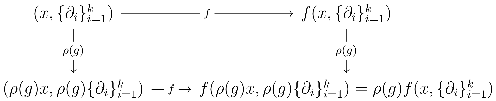
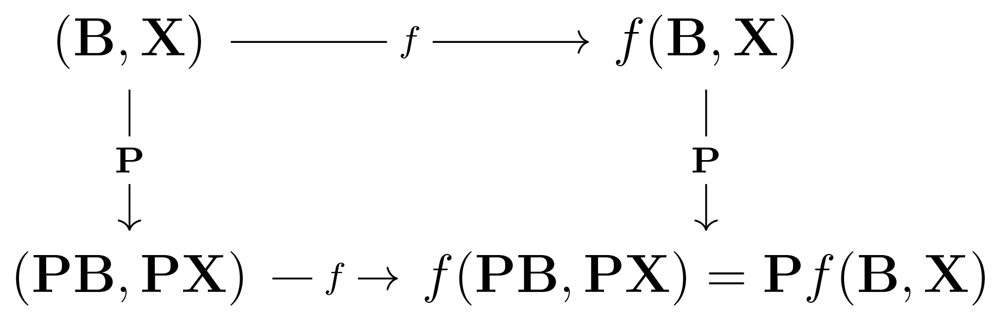

Permutation Symmetry G-Map and Invariance: Sets, Graphs, Simplicial Complexes, and Cell Complexes
Sets and graphs
Graphs offer a versatile and easily analysable structure that extends sets by incorporating relationships between entities. We will explore this domain by considering both the basic structure of sets and the more intricate structure of topological graphs, focusing on permutation group invariance and equivariance.
A set \( S = (V) \) consists of nodes \( V = \{v_1, v_2, \ldots, v_n\}\). A graph \({\Gamma = (V,E)}\), on the other hand, consists of nodes and edges, where \(E \subseteq V \times V\), i.e., edges are a subset of the Cartesian product of the nodes with themselves and form a set of pairs of nodes. In graph theory, edges \(E\) can be represented in an adjacency matrix \(\mathbf{A}\), which is a symmetric matrix where the value of 1 indicates a connection, or edge \((i,j)\), between two nodes \(i\) and \(j\), and 0 otherwise:
\[
a_{i j}= \begin{cases} 1 & \text{ if } (i,j) \in E \\ 0 & \text{ if } (i,j) \notin E \end{cases}
\]
Each node \(v_i\) contains a feature vector \(\mathbf{x}_i\), and these features lie in a channel space \( C = \mathbb{R}^k \). The node features are assembled into a matrix \(\mathbf{X}\) of shape \(n \times k\): \(\mathbf{X} = {(\mathbf{x}_1, \dots, \mathbf{x}_n)}^T\), associating the \(i\)-th row with \(\mathbf{x}_i\).
Although a particular node ordering in the set \(S\) or in the graph \(\Gamma\) is implied, it is essential for our purposes that the output of the neural network remains unaffected by this order. To achieve this, we use permutation-invariant functions capable of distilling an order-independent aggregate from the data. Such functions are fundamental in handling sets or unordered data collections where the element order lacks relevance.
Examples of permutation-invariant functions include statistical measures such as the mean, maximum, and sum. These functions operate on the set of features in a way that ignores their sequence, producing a consistent result.
Let \( G \) be a group acting on the set \( S \) and graph \(\Gamma\), and let \( \rho: G \rightarrow \text{GL}(V) \) be a group representation, where \(\text{GL}(V)\) is the general linear group of invertible matrices over a vector space \( V \). This representation encodes how the elements of \( G \) act on the set, the graph, and any other associated structures like the adjacency matrix and feature matrix.
The required symmetry group \( G = \mathrm{Sym}(M) \) here is the \( n \)-element permutation group. Each element \( g \in G \) represents a permutation. There are \( n! \) such permutations possible.
A function \( f(x) \) is said to be permutation invariant if \(\forall \rho(g) \in G\), \( f(\rho(g) x) = f(x) \). In linear-algebraic terms, \(\rho(g)\) corresponds to an \( n \times n \) matrix or permutation matrix \(\mathbf{X}\). Permutation matrices merely shuffle the rows of another matrix, which, in our case, is the node feature matrix \(\mathbf{X}\). We thus say that \( f(\mathbf{X}) \) is permutation invariant if \(\forall \mathbf{P}\), \( f(\mathbf{PX}) = f(\mathbf{X}) \), i.e., \( f(\mathbf{X}) \) is permutation group equivariant if it does not matter whether the permutation matrix \(\mathbf{P}\) is applied before or after applying the function \( f \); the function should return the same result. This property forms the foundation for designing functions resilient to permutations on sets.
Deep Sets is often invoked as a standard way of implementing permutation invariance over sets and as a generic model capable of expressing any other permutation invariant model .
The standard implementation of a permutation invariant function in a neural network may be expressed as \( f(\mathbf{X}) = \phi(\bigoplus_{i \in V} \psi(\mathbf{x}_i)) \),
where we compute outputs over the input set given by the node feature matrix \( \mathbf{X} \) by applying a learnable function \( \psi \) to every single node feature vector \( \mathbf{x}_i \), after which we aggregate the resulting vectors. Finally, to predict the outputs, we use another learnable function \( \phi \), applied over the output of the aggregate.
Here, \( \bigoplus \) represents a binary operation that combines two elements in a way that is insensitive to their order; it is any permutation-invariant operator.
Having an additional object — edges \( e_{ij} \) — in graphs means that the permutation matrix does not act only on the nodes, but also on the edges. Permutation invariance over graphs is thus expressed as:
\[
f(\rho(g)x, \rho(g) e_{ij}) = f(x, e_{ij}) \quad \forall \rho(g) \in G .
\]
Edges are represented by an adjacency matrix \( \mathbf{A} \). Permuting \( \mathbf{A} \) implies a permutation of both its rows and its columns. The permutation takes the linear-algebraic form \( \mathbf{PAP}^T \) and the invariance wrt permutation over graphs is expressed as \( f(\mathbf{PX},\mathbf{PAP}^T) = f(\mathbf{X},\mathbf{A}) \).
While permutation invariance is powerful for handling sets as a whole, it is less suitable for operations that depend on the specific position or identity of individual elements within the set.
A permutation-invariant aggregator does not recognise the order or specific identity of elements within a set. If the position or role of an individual node within the set carries important information (e.g., the first element represents a unique identifier), a permutation-invariant function would not consider it.
By treating all nodes equally and without considering their order, a permutation-invariant function might overlook specialised or role-based behaviors of individual nodes. In graph-based models, for instance, some nodes might have specific functions or relationships that are essential to the overall system's behavior. A permutation-invariant aggregator would not allow for this specialised treatment.
In tasks where the sequence or ordering of nodes matters (e.g., time-series data, natural language processing), applying a permutation-invariant function would disrupt the inherent sequence-based relationships between nodes. It would make the function unsuitable for modeling or predicting sequence-dependent phenomena.
For the outputs at the level of a node, we need functions that do not influence the node order. It should be so that permuting the nodes order can be done before or after those functions, such that every single node output can be identified afterward.
This leads us to the notion of \( G \)-map for the specific case of permutation group \( G = \mathrm{Sym}(M) \).
We say that \( f(x) \) is permutation group equivariant over sets if
\[
f(\rho(g)x) = \rho(g) f(x) \quad \forall \rho(g) \in G
\]
In linear-algebraic terms, this corresponds to
\( \forall \mathbf{P}, f(\mathbf{PX}) = \mathbf{P}f(\mathbf{X}) \), i.e.,
\( f(\mathbf{X}) \) is permutation equivariant if, regardless of what permutation matrix we choose, it does not matter whether \( \mathbf{P} \) is applied before or after applying the function \( f \); it should return the same result.
\( G \)-map wrt permutation over graphs is expressed as:
\[
f(\rho(g)x, \rho(g) e_{ij}) = \rho(g) f(x, e_{ij}) \quad \forall \rho(g) \in G
\]
which corresponds to as \( f(\mathbf{PX},\mathbf{PAP}^T) = \mathbf{P}f(\mathbf{X},\mathbf{A}) \).
Simplicial complexes
Like with sets and graphs, we require a permutation \( G \)-map over simplicial complexes due to the possible relabeling of simplices in the complex.
One approach to permuting a simplicial complex \( K \) of dimension \( k \) is to permute the underlying \( k=0 \) simplices, or vertices. This would induce the permutation of the higher order simplices \( k>0 \). The other approach is to permute all the simplices in \( K \) that are of the same dimension independently, which is the approach we are going to take.
Recall that the boundary operator of a simplex is a linear map \( \partial_k: C_k \rightarrow C_{k-1} \), assigning to each \( k \)-simplex \( \sigma \) in a simplicial complex a \( (k-1) \)-chain \( \partial_k(\sigma) \). This chain is the formal sum of its \( (k-1) \)-dimensional faces with alternating signs, where \( C_k \) is the \( k \)-th chain group of the simplicial complex.
We denote the collection of all boundary operators of a simplicial complex \( K \) of dimension \( k \) by \( \{\partial_i\}_{i=1}^{k} \).
Now, we can define invariance wrt permutation over simplicial complexes as:
\[
f(\rho(g) x, \rho(g) \{\partial_i\}_{i=1}^{k}) = f(x, \{\partial_i\}_{i=1}^{k}) \quad \forall \rho(g) \in G
\]
\( G \)-map wrt permutation over simplicial complexes is expressed as:
\[
f(\rho(g) x, \rho(g) \{\partial_i\}_{i=1}^{k}) = \rho(g) f(x, \{\partial_i\}_{i=1}^{k}) \quad \forall \rho(g) \in G
\]

Recall that the boundary matrix \( \mathbf{B}_k \) represents the boundary operator. \( \mathbf{B}_k \) maps the set of \( k \)-simplices, \( \sigma^k \), to the set of \( (k-1) \)-simplices. In this mapping, each row \( i \) of the matrix corresponds to a unique \( (k-1) \)-dimensional simplex in the boundary of \( \sigma^k \), and each column \( j \) of the matrix corresponds to a unique \( k \)-dimensional simplex \( \sigma^k \). The entry in row \( i \) and column \( j \) of \( \mathbf{B}_k \) is \( +1 \) if \( i \) and \( j \) have the same relative orientations, \( -1 \) if \( i \) and \( j \) have inverse relative orientations, and \( 0 \) if \( j \) does not contain \( i \) as a face.
\( \mathbf{B}_k \) is a \( (n_{k-1}) \times n_k \) matrix, where \( n_k \) is the number of \( k \)-dimensional simplices in \( K \).
A simplicial complex \( K \) of dimension \( k \) can be represented by all of its boundary matrices \( \mathbf{B} = (\mathbf{B}_1, \mathbf{B}_2, \dots , \mathbf{B}_k) \).
Let \( \mathbf{P} = (\mathbf{P}_0, \mathbf{P}_1, \dots , \mathbf{P}_k) \) be a finite ordered sequence of permutation matrices. Permutation of \( \mathbf{B} \) takes the linear-algebraic form:
\[
\mathbf{PB} = ( \mathbf{P}_0 \mathbf{B}_1 \mathbf{P}^{\top}_1, \mathbf{P}_1 \mathbf{B}_2 \mathbf{P}^{\top}_2, \dots , \mathbf{P}_{k-1} \mathbf{B}_k \mathbf{P}^{\top}_k) ,
\]
where \( \mathbf{P}_0 \mathbf{B}_1 \mathbf{P}^{\top}_1 \) denotes a permutation of the rows of \( \mathbf{B}_1 \) by the node permutation matrix \( \mathbf{P}_0 \) and columns by the edge permutation matrix \( \mathbf{P}^{\top}_1 \).
Features of a simplicial complex are given by a collection of feature matrices, \( \mathbf{X} = (\mathbf{X}_0, \mathbf{X}_1, \dots, \mathbf{X}_k) \). Permutation of feature matrices \( \mathbf{X} \) takes the following form:
\( {\mathbf{PX} = ( \mathbf{P}_0 \mathbf{X}_0, \mathbf{P}_1 \mathbf{X}_1, \dots , \mathbf{P}_{k} \mathbf{X}_k)} \).
Thus, we can define permutation invariance wrt simplicial complexes as:
\[
f(\mathbf{PB},\mathbf{P} \mathbf{X}) = f(\mathbf{B},\mathbf{X})
\]
Permutation \( G \)-map over simplicial complexes takes the form:
\[
f(\mathbf{PB}, \mathbf{P} \mathbf{X}) = \mathbf{P} f(\mathbf{B},\mathbf{X})
\]

Cell complexes
Adjacencies and boundary relationships in cell complexes are more intricate to describe compared to graphs or simplicial complexes. Unlike simplicial complexes, cell complexes do not naturally have a hierarchy of faces that lend themselves to a simple matrix representation like boundary matrices.
Cell complexes are built by gluing cells of various dimensions together. An incidence matrix can be defined to describe how these cells of different dimensions are connected. For a cell complex with cells of dimensions ranging from \(0\) to \(k\), one might define a sequence of incidence matrices \(\mathbf{I} = (\mathbf{I}_0, \mathbf{I}_1, \ldots, \mathbf{I}_{k-1})\), where \(\mathbf{I}_i\) captures the relationships between \(i\)-cells and \((i+1)\)-cells.
In the case where a cell complex consists entirely of cells of the same dimension \(k\), the usual definition of an incidence matrix does not directly apply. A common approach to handle this special case is to define adjacency based on a broader sense of sharing common boundaries. This can be captured by an adjacency matrix \(\mathbf{A}\), where \(a_{ij} = 1\) if the \(i\)-th and \(j\)-th \(k\)-cells share a common boundary, and \(0\) otherwise.
Another approach is to employ a dual complex where vertices correspond to the \(k\)-cells of the original complex, and edges in the dual connect vertices corresponding to adjacent \(k\)-cells in the original. This dual complex can have an adjacency matrix \(\mathbf{A}\) in the usual graph-theoretic sense, providing a matrix representation for adjacency within a uniform dimension cell complex.
Permutation \( G \)-invariance and \( G \)-map can be defined over cell complexes, much like in simplicial complexes. For incidence matrices, the permutation might be expressed through a sequence of permutation matrices \(\mathbf{P} = (\mathbf{P}_0, \mathbf{P}_1, \ldots, \mathbf{P}_{k-1})\), with the transformation given by:
\[
\mathbf{PI} = ( \mathbf{P}_0 \mathbf{I}_0 \mathbf{P}^{\top}_1, \mathbf{P}_1 \mathbf{I}_1 \mathbf{P}^{\top}_2, \ldots, \mathbf{P}_{k-2} \mathbf{I}_{k-1} \mathbf{P}^{\top}_{k-1})
\]
Here, the permutation matrices act on the rows and columns corresponding to the cells they permute.
\( G \)-invariance and \( G \)-map can then be defined analogously to the simplicial complex case, utilising the transformed incidence matrices or adjacency matrices.
References
Manzil Zaheer, Satwik Kottur, Siamak Ravanbakhsh, Barnabás Póczos, Ruslan Salakhutdinov, Alexander J. Smola.
"Deep Sets". CoRR, abs/1703.06114, 2017.